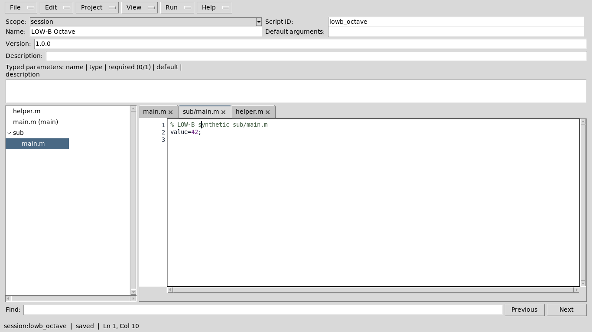
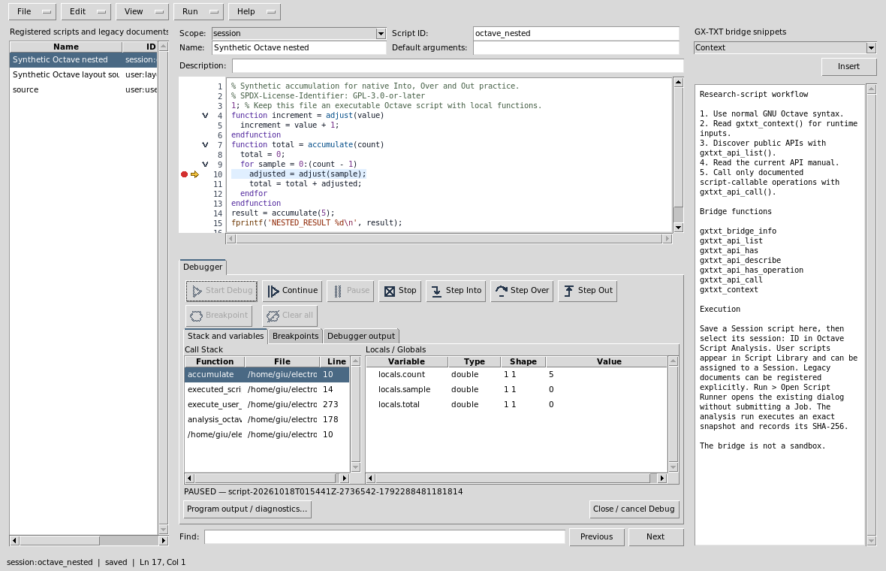
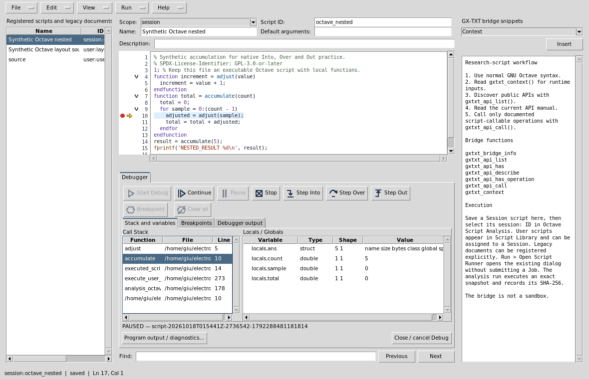
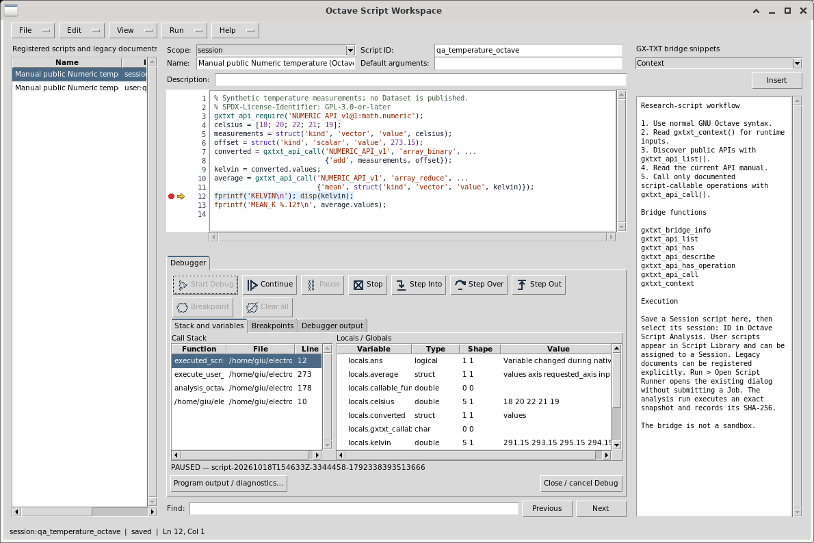
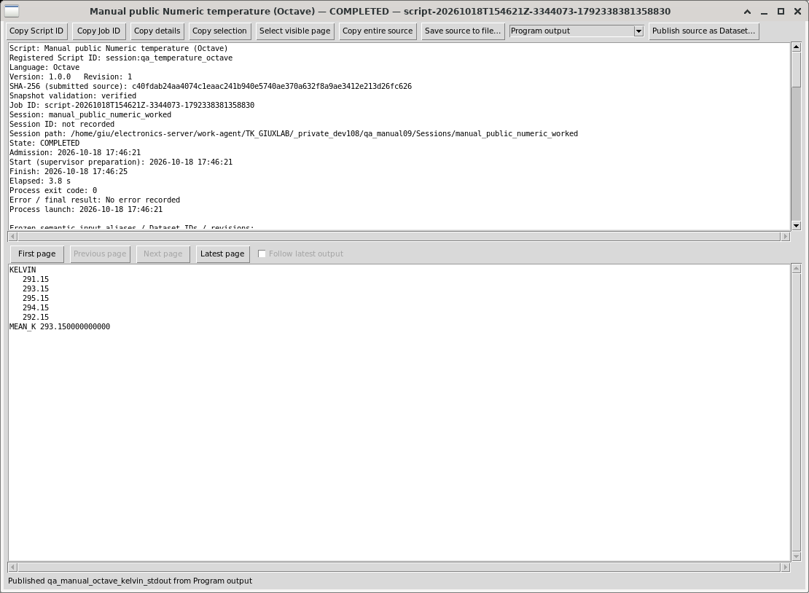
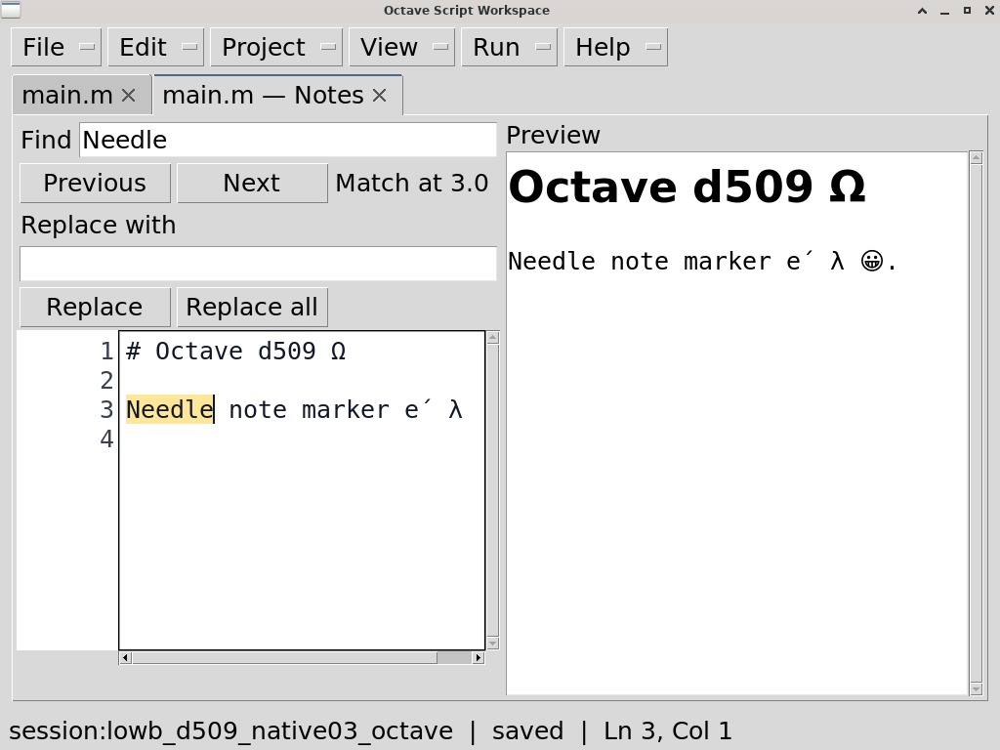

In Script Library, choose the intended
scope/language, New Project, enter an ID/name and
Save. Open Workspace opens its real
entrypoint. The project file tree navigates the project. The
Project menu opens/adds files, renames or moves paths,
removes non-entrypoint files and selects the main entrypoint. Source
subfolders are supported. Python projects import admitted
helpers/packages; Octave helper functions use their actual matching
.m filenames.
Each file has its own source buffer, dirty star, Undo/Redo, caret, scroll and Find. The primary menu is File / Edit / Project / View / Run / Help. Use the Project menu for project file operations; the file tree navigates sources. F10 focuses the primary menu row; Left/Right choose a menu and Space/Down open it. Alt+F/E/P/V/R/H open File/Edit/Project/View/Run/Help directly. Escape returns to the source. The same arrows navigate adjacent open primary menus. File → Save saves the active Script or its complete Project transaction; File → Save All (Ctrl+Shift+S) saves every writable dirty Script/Project. Separate Scripts remain independent records, and a stale source or metadata revision refuses saving while preserving unsaved buffers.
Click the × at the right of a source tab to close that exact file, including an inactive tab. Dirty sources offer Save / Don’t Save / Cancel. Cancel preserves the original active file and focus. File → Close tab (Ctrl+W) closes the active tab; File → Close closes the Workspace. Closing the final source tab creates a fresh unsaved draft. No extra toolbar or source selector is needed.
Ctrl+Tab/Ctrl+Shift+Tab cycle all open files. When tabs exceed the available width, the tab strip’s … menu lists their complete qualified identities; Alt+Down on the notebook opens that same list. Selecting a hidden file brings its tab into view. Duplicate paths in separate Scripts show their distinct references. The project file tree remains available. On small screens or at large fonts, use View → Focus source / restore panes or hide optional side panes and script properties; these commands preserve their contents.
Assign to Session freezes every admitted source. Export writes one integrity-checked Project ZIP, including source and saved parameter/API metadata; Import Project ZIP creates a new reviewed identity. Run and Debug use the existing Runner/Job supervisor and freeze the entire tree again. Helper-file breakpoints and native stack navigation use physical file/line and the frozen whole-project SHA. Job details Open source files opens verified historical sources in read-only tabs, separate from today’s editable Registry record.

Declare typed parameters directly in source using literal arguments:
gxtxt_parameter_declare('gain', 'double', 'default', 2.0, ...
'min', 0.0, 'description', 'Signal multiplier');
ctx = gxtxt_context();
gain = ctx.parameters.gain;Saving inspects declarations without running imports or scientific source, including every admitted project helper. Distinct source and editor metadata names combine; conflicts and nonliteral declarations refuse saving. Change a source-declared definition in its source. The runtime declaration has no side effects and does not assign the effective value to a language variable.
The shared Runner always offers Add parameter, including an empty schema. Invocation-only rows have typed values, Edit and Remove, and do not change saved declarations. Optional Save parameters as Dataset / Load parameters preserves mixed definitions and exact typed values; loaded values remain editable before Run. No declaration or Dataset is required merely to add an invocation parameter. Source/revision, effective schema, origins and values remain in the immutable Job provenance.
See Project contract and source declaration contract for exact path, type, constraint, runtime and host API rules.
SPDX-License-Identifier: GPL-3.0-or-later
Module: analysis.octave_script. Editor:
OCTAVE_SCRIPT_EDITOR_API_v1. Execution uses CORE Script
Registry, Script Execution and
OCTAVE_SCRIPT_BRIDGE_API_v1.
Open Viewers → Octave Script Workspace. The editor works without an open Session: New defaults to User scope. A User script belongs to Script Library; a Session script belongs to the current Session. Assigning a User script to a Session creates a separate source identity. Later User edits do not change that Session copy. Script Registry owns executable source, revision, metadata and SHA. The editor’s name “Workspace” does not create a scientific Session Workspace.
Choose New, a stable Script ID, Name, Scope and Description, then edit and Save. Save updates the selected registered identity after a held source-SHA check. Save copy creates a new identity. Delete requires confirmation and respects active dependencies. Copy ID copies the registered reference. Scope/ID of an existing record cannot change in place. Use a copy or Library assignment.
Session scripts appear as session:<script_id> in
Library, Session Script Explorer and the ordinary Octave Analysis
selector. User-only scripts do not appear in that Session selector.
Save/reopen preserves the registered source; a run uses a verified
immutable snapshot and records its SHA in provenance.
Obsolete Interactive Document editor Workspaces cannot be read, restored, registered, converted or written by this editor. Metadata-only Session inspection and explicitly confirmed resource-safe deletion remain available in the common Workspace manager. New source is saved only through Script Registry.
Import .m / Ctrl+O loads UTF-8 source into an unregistered editor buffer. Choose scope/ID and Save to register it. Export .m writes the current buffer through the save chooser, without execution or Registry assignment. Source import/export retains BOM/newline information represented by that contract. Unsupported encodings or metadata errors require correction. A stale buffer can be exported before reopening the actual registered identity.
The Octave metadata panel has Scope, Script ID, Name, Default
arguments and Description. Version, additional API requirements and
typed parameter schemas are edited in Run → Script
Library. Reopen the editor identity after a Library metadata
change. Default arguments is inert single-line UTF-8 text, at most 4096
bytes without NUL. It is available as
gxtxt_context().arguments_raw, not interpreter
argv() or a shell command. Typed named values are in
ctx.parameters. Literal
gxtxt_api_require('API_ID') requirements are discovered on
Save; additional requirements/version constraints belong to Library.
File, Edit, View, Run and Help form the compact menu row. Explorer opens registered identities, source is central and Bridge Snippets is at the right. Insert places the selected public example at the insertion point; it does not execute it. Review source and required APIs before running.
| Control | Behavior |
|---|---|
| Ctrl+N / Ctrl+S | New buffer / save checked Registry revision. |
| Ctrl+A / C / X / V | Select/copy/cut/paste in the focused editable control. |
| Ctrl+Z / Ctrl+Y | Local undo/redo in multiline source/Text controls. Entry fields have no undo history. |
| Ctrl+F / F3 / Shift+F3 | Find / next / previous literal source match. Escape returns to source. |
| Ctrl+G | Go to physical source line, including a folded line. |
| F9 / Ctrl+Shift+F9 | Toggle breakpoint / clear all breakpoints. |
| F1 | Open this integrated searchable manual. |
Pasting over selected source is one local undo transaction. Copying/selecting read-only values does not mark source dirty or write a Registry revision. Line numbers and reference text are read-only.
View independently controls Explorer, Snippets, Debugger, Call Stack, Variables, Debug Output and Breakpoints. Focus source is reversible; Reset layout restores standard panes and proportions. Script properties collapses other metadata. View → Parameters independently hides/restores declarations without changing values, source, dirty state or debugger state. Drag splitter sashes to resize. Visibility and proportions are user presentation preferences. Font changes apply after restarting GX-TXT. Narrow debugger buttons retain icons and tooltips. Tab/Shift+Tab moves focus; Space/Return invokes an enabled focused control.

Run → Open Script Runner opens review for a clean saved identity; it does not submit a Job. With a dirty registered buffer, Yes saves first, No reviews the last saved revision while keeping edits, and Cancel returns to editing. Unsaved anonymous source must be registered first. The Runner identifies the actual scope, ID, version and SHA. A changed source is identified and stale saves fail.
Review typed invocation values and saved inert argument text. Each Add input Dataset row has its own Namespace and Dataset ID selectors, a unique semantic alias and optional display label. Namespace changes clear only that row; Session Current and other rows stay unchanged. Selection captures the Dataset revision; changed or moved inputs require explicit reselection. Remove input removes only that request. Parameter-only scripts need no Dataset.
Parameter Dataset accepts a canonical preset ID in this Session. Save parameters as Dataset creates a new typed canonical Dataset; Load parameters checks Script/schema/source/revision and payload integrity before applying all values. Numeric, string, boolean and choice types and stable Variable IDs are preserved. Loaded values remain editable. Neither action changes Registry metadata or executes a Job. A changed preset or Script requires fresh review.
Output request declares an optional ID/label and deliberate owned replacement. Publication defaults to the script producer’s private namespace; input namespaces grant no write rights. Only an actual Publication commit creates output. Validate review checks without execution; Run Job submits the immutable Script/input/parameter snapshot. Close dismisses review and does not cancel an admitted Job. The actions/status remain visible while the form scrolls; Tab/Shift+Tab reaches fields, Ctrl+Return submits and Escape closes review. Script Jobs reports actual completion, cancellation and committed outputs.
In ordinary Analysis choose
source_mode=registered_script, select the Session script,
input aliases and parameters, then Run. external_file
intentionally runs a standalone .m. Optional working
directory defaults to the Session; Include script directory opts into
neighboring external helpers. Required APIs add preflight constraints.
Each Analysis run retains executed_script.m and
octave_script_run_report.txt, identifying its exact
source.
Scripts use gxtxt_context(),
gxtxt_api_list(), gxtxt_api_describe(),
gxtxt_api_require() and gxtxt_api_call().
Arguments/results follow the public Bridge typed-node contract. Native
scientific Workspaces use NATIVE_WORKSPACE_API_v1, explicit
node kinds and held generation/revision receipts. Missing required APIs
fail before execution. Scripts run as trusted researcher code with the
local user’s permissions.
Debug requires an open Session and clean saved Session source. Open View → Debugger or Run → Debug Session script, set a valid breakpoint and press Start Debug. Debug runs the immutable registered source/SHA. The gutter has independent breakpoint, execution-arrow and fold lanes plus physical line numbers. Filled red dots are enabled, hollow dots disabled, yellow arrows show the selected paused native frame. Folding does not edit source or toggle a neighboring breakpoint. Non-executable breakpoint targets are refused. Editing invalidates old source positions; breakpoint changes are locked during an active managed Debug Job.
Continue resumes. Step Into enters a language function, Step Over completes the statement, and Step Out returns to a caller. Select Call Stack rows to inspect that native frame and its locals; this does not change the interpreter’s top execution frame. Locals/Globals are bounded read-only type/shape/value summaries, not a Watch/eval console. External frames show their own path and line. Folded current source is revealed. The script editor does not bind F5/F10/F11 to stepping; use the named toolbar controls or Tab/Space.
GNU Octave asynchronous Pause is unsupported and disabled with an explanation; use breakpoints and steps. Stop requests owned-Job cancellation. Hiding Debug retains the Job; Close/cancel Debug asks before cancelling an active one. Completion, cancellation and failure clear the active stack/arrow. Both native language adapters have a 600-second inspection lease; inspect the actual terminal state and diagnostics instead of assuming every failure is a time limit.
Caught Octave user errors retain their actual message and native origin stack through Step Over/Continue and durable Job failure. An unwound origin frame is not a selectable live frame. “Last paused” variables are the last observed snapshot, not live post-error values. This does not promise pre-unwind exception locals. Changed source prevents a stale source highlight and stepping.

Library organizes User/Session scripts, assignments and canonical metadata. Jobs Manager opens existing durable Jobs and logs. Reconnect/Refresh reads the same execution; explicit Rerun reviews and creates another Job while preserving the historical one. Cancellation is asynchronous. A closed window does not resubmit or erase a completed Job.
Manager History hides/restores finished rows reversibly; Include hidden shows them. View selects scope, filters, columns and pages of at most 500 Jobs. Manager Workspace saves its presentation filters/scope/layout only. Settings opens the shared admission policy. These actions do not modify scripts, scientific outputs, execution state or retained logs.
Execution details show source/Job identities, parameters, runtime, resource policy/usage, diagnostics and committed publication IDs. Program output selects stdout, Program stderr its separate stream, Diagnostic log trusted runtime messages, and Legacy combined stream an available older combined log. Debug Output contains debugger control receipts, distinct from program streams.
| Output control | Operation |
|---|---|
| Copy Script ID / Job ID / details | Copy the named identity or complete displayed upper details. |
| Copy selection / Select visible page | Copy selected text / select the current lower page and suspend following. |
| Copy entire source | Copy the selected retained stream across pages, up to 32 MiB. Here “source” means the output stream. |
| Save source to file… | Atomically export the complete selected stream; use this for larger output. |
| First / Previous / Next / Latest | Navigate 64 KiB byte pages with actual byte ranges. |
| Follow latest output | Follow new output; selection, scrolling or manual navigation suspends it. |
| Publish source as Dataset… | Review and explicitly publish the selected stream as a canonical TEXT Dataset with original Job provenance. |
| Close | Release owned readers/transfers; retain the durable Job and output. |
Replacement/shrinkage interrupts a transfer with an error; an interrupted export is incomplete. Publishing stdout as TEXT does not invent numerical columns or units. Use public Dataset/File Publication APIs with explicit schemas and completed-result guards for numerical tables. Reopen existing output from Jobs Manager and published text from Results without running the script again.
Concurrency/resource policy controls concurrent Jobs, active+queued admission, threads, memory MiB, temporary disk MiB, processes and time seconds. Review actual effective limits. Saved policy applies to newly admitted Jobs, not retroactively to a running execution. Existing CORE supervision owns enforcement.
Import examples/debug_temperature.m, save/assign it as
Session source, and require NUMERIC_API_v1@1:math.numeric.
It converts 18, 20, 22, 21, 19 °C with 273.15 K to 291.15, 293.15,
295.15, 294.15, 292.15 K, mean 293.15 K. Review and run it normally,
then debug its immutable saved revision with a breakpoint before output.
Inspect celsius, kelvin, average
and compare normal/debug stdout. examples/debug_nested.m
practices Step Into/Out/Over; adjusted values 1–5 sum to 15. Neither
example publishes scientific data automatically.


New/Import binds Session scope to the current Session lifetime. A buffer from A cannot save/delete/run into B; returning to A’s path is still a new lifetime. Export unsaved source, reopen the intended Session, then New/Import or select its current registered identity. Changing scope is not implicit adoption of a stale buffer. Closing the editor protects unsaved edits and an owned active Debug Job.
Help → Viewer manual / Debugger guide and F1 open the rendered guide with Find, section links, Back/Forward and full-size images. Source examples are imported through File. About reads the installed module/provider/version/license/API metadata. For missing scripts check Session scope/language/module availability; for stale saves reopen the record; for disabled Debug check clean saved Session source and SHA; for lost panes use View/Reset. Inspect retained diagnostics and resolve missing public APIs through their documentation.
Use the primary Edit → Edit Notes command for the selected source file. View → Show Notes hides or shows the same adjacent note page; it retains the draft and its Undo/search state. Notes use the shared Markdown editor with Source, Rendered, Outline, Properties and Resources views. Insert images through its existing image command. Source and Rendered have independent selection and copy. Find and Focus Source act on the selected note. Python/Octave temporarily give Notes the source region and restore the prior code panels when returning to code.
Explicit Save publishes the note as a canonical Markdown Dataset in the current Session. Without a Session, Save retains an explicit local note; attach it when a Session is available. Save All and portable Project export preserve per-file notes and their PNG resources through the existing source-owner snapshot. Save As/Save Copy create fresh source/note identities and preserve the original. Notes do not change source code, build inputs or scientific execution hashes. If another editor changes the source or note, saving refuses and retains the draft; review the current revision or use Publish New to preserve a separate copy.
Opening an associated note from the Dataset Browser returns to that exact file’s Notes page when its source remains available. Otherwise Documents opens the same canonical Dataset. Associated Source is read-only and shows only the exact matching source, with an explicit diagnostic if it has changed or disappeared.

Octave per-file Notes with independent Source and Rendered panes at font18.
Formatting is in Edit → Note format, including headings, emphasis, code, lists, tables, links, quotes, rules and text color. Edit → Note images opens the shared PNG chooser and provides Replace/Remove for the selected managed resource. View → Note panes and zoom controls Source, Rendered preview, Outline, Properties and Resources independently, with zoom and layout reset. These groups act on the currently selected note and are unavailable on code pages. Portable images remain read-only until explicit Session attachment.